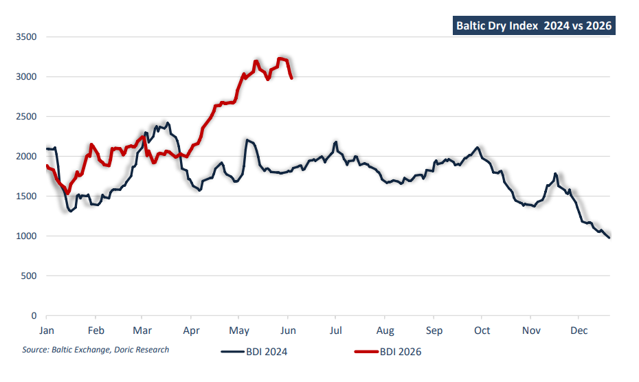

Every two years, Posidonia provides the global shipping community with a unique opportunity to assess not only the state of the shipping markets but also the broader economic landscape that ultimately drives seaborne trade. Beyond the exhibition halls, business meetings and networking events that transform Athens and Piraeus into the centre of the shipping world, Posidonia has traditionally served as a valuable barometer of industry sentiment. The mood prevailing during each gathering often reflects the prevailing freight environment, investment appetite, commodity demand and expectations for the global economy. As delegates arrive in Athens for Posidonia 2026, comparisons with the previous exhibition are inevitable. During Posidonia 2024, optimism was gradually increasing across shipping markets. Inflation was easing, central banks appeared to be approaching the end of the most aggressive tightening cycle in decades, and freight markets were showing encouraging signs of resilience despite concerns surrounding China's property crisis, slowing global growth and persistent geopolitical tensions. Yet much of the positive sentiment prevailing at the time was built upon expectations. Two years later, the industry finds itself in a fundamentally different position. Many of the expectations that supported sentiment during Posidonia 2024 have since materialised. Global monetary policy has shifted decisively towards easing, financial markets have reached record highs, freight markets across several shipping sectors have strengthened, and global trade has proven considerably more resilient than many anticipated. While geopolitical risks remain elevated and the world economy continues to face structural challenges, the atmosphere surrounding Posidonia 2026 appears notably more confident than it did two years ago.
The macroeconomic backdrop alone highlights the scale of the transformation. During Posidonia 2024, the US Federal Reserve maintained its benchmark interest rate at 5.25-5.50 percent, the highest level in more than twenty years. China's one-year Loan Prime Rate stood at 3.45 percent as authorities attempted to support a struggling property sector. Most notably, Posidonia 2024 coincided with the European Central Bank's first interest rate cut since 2019, reducing its deposit facility rate from 4.00 to 3.75 percent. At the time, financial markets were focused almost entirely on the prospect of lower borrowing costs. The debate centred on whether inflation could continue falling without triggering a recession. Today, the conversation has changed significantly. The ECB deposit rate has fallen to 2.00 percent, while most developed economies have moved substantially further along the easing path. Financing conditions have improved, liquidity has returned to financial markets and access to capital has become less restrictive. While rates remain above the exceptionally low levels that prevailed throughout much of the previous decade, the financial environment confronting shipowners today is considerably more supportive than the one that existed during Posidonia 2024.
Financial markets have reflected this improvement in confidence. During the first week of June 2024, the S&P 500 traded near 5,350 points, having recovered strongly from the inflation-driven correction of 2022. Investors were becoming increasingly convinced that the US economy could avoid recession, but uncertainty remained widespread. Since then, the benchmark index has advanced to new record territory, surpassing 7,500 points and delivering gains exceeding 40 percent over the two-year period. Similar strength has been observed across major equity markets, supported by resilient economic growth, moderating inflation and unprecedented investment in artificial intelligence. The resulting increase in investor confidence has contributed to stronger asset values across shipping markets as well.
The dry bulk market provides perhaps the clearest example of how expectations have evolved into reality. During Posidonia 2024, the Baltic Capesize Index closed the week at $24,900 per day, while Panamax earnings stood near $15,800 per day. Supramax and Handysize earnings reached $13,800 and $12,800 per day respectively. These were healthy returns, particularly considering the uncertainty that continued to surround China's property market and the broader global economy. Nevertheless, many market participants remained cautious. Questions persisted regarding steel demand, construction activity and the sustainability of Chinese commodity imports. Two years later, sentiment within the dry bulk sector appears considerably stronger. Iron ore exports from both Australia and Brazil remain robust, while Chinese imports have continued to surprise positively. Bauxite has emerged as one of the fastestgrowing dry bulk trades, generating significant tonne-mile demand. Coal imports have likewise remained resilient, particularly across Asia, despite ongoing decarbonisation efforts. Grain exports from South America continue to underpin Panamax demand, while the minor bulk trades supporting Supramax and Handysize vessels have demonstrated remarkable stability. Importantly, demand growth has generally outpaced effective fleet expansion. While newbuilding activity has increased, the dry bulk orderbook remains historically moderate compared with previous shipping cycles. Consequently, freight markets entering Posidonia 2026 are supported by a healthier supply-demand balance than many expected during the previous exhibition.
The changing narrative surrounding China has played a central role in this transformation. During Posidonia 2024, discussions regarding the world's second-largest economy were dominated by concerns surrounding the property sector. Major developers remained under financial pressure, home sales continued to decline and investors closely monitored every policy announcement from Beijing in search of additional stimulus measures. The prevailing view was that a meaningful recovery in construction activity would be necessary to support steel demand, iron ore imports and ultimately dry bulk freight markets. While the property sector remains challenged today, the focus has shifted elsewhere. Rather than relying on real estate as its primary engine of growth, China has increasingly leaned on manufacturing, exports and advanced industrial production. Electric vehicles, batteries, renewable energy equipment, machinery and technology products have become increasingly important drivers of economic activity. Chinese exports have continued to perform strongly despite rising trade tensions with both Europe and the United States, while industrial production has remained comparatively resilient. For shipping markets, the implications have been significant. Commodity demand is now being supported by a broader industrial base rather than solely by construction activity, creating a more diversified foundation for seaborne trade.
Tanker markets tell an equally compelling story. During Posidonia 2024, owners were already benefiting from the reshaping of global oil trade flows following sanctions on Russian crude oil and petroleum products. Longer voyage distances and shifting trade patterns boosted tonne-mile demand, supporting strong earnings across crude and product tanker segments. While many questioned whether these favourable conditions could last, the market has remained remarkably resilient. Posidonia 2026 is taking place against a very different geopolitical backdrop. Two years ago, discussions centred on OPEC policy, Russian exports and Red Sea disruptions. Today, escalating tensions between the United States and Iran have heightened concerns over energy transportation through the Middle East, bringing the Strait of Hormuz back into focus. For tanker owners, the consequences have been significant. Higher insurance costs, more complex voyage planning and tighter vessel availability have created additional inefficiencies across the market. Combined with longer voyage distances, increased waiting times and elevated risk premiums, these factors have further strengthened tanker fundamentals and supported freight rates, turning geopolitical uncertainty into an additional source of earnings support. The container sector has likewise confounded expectations. During Posidonia 2024, the industry was already benefiting from the Red Sea crisis, which forced vessels to divert around the Cape of Good Hope and dramatically increased voyage distances. Freight rates surged and charter markets strengthened, yet concerns regarding the industry's massive orderbook remained widespread. Many analysts predicted that the delivery of new capacity would eventually overwhelm demand and trigger a significant correction. Two years later, those predictions have not fully materialised. Despite substantial vessel deliveries, effective capacity has remained constrained by longer sailing distances, recurring geopolitical disruptions and resilient cargo demand. Freight rates remain significantly above the levels anticipated by many forecasters in 2024.
Beyond the freight markets themselves, investment activity provides perhaps the clearest indication of industry confidence. During Posidonia 2024, shipowners faced significant uncertainty regarding future environmental regulations. Although ordering activity remained healthy, many investors preferred to wait for greater clarity regarding the industry's decarbonisation pathway. Today, those uncertainties have not disappeared, yet investment appetite remains strong. Newbuilding orders continue across all major sectors, secondhand asset values remain elevated and shipowners are increasingly willing to commit capital despite ongoing regulatory ambiguity. The willingness of owners to invest despite lingering uncertainty reflects the strength of current market fundamentals and confidence in the long-term prospects for maritime trade.
Two years ago, as the shipping community gathered for Posidonia 2024, optimism was largely driven by expectations that inflation would ease, interest rates would decline and global trade would remain resilient despite mounting uncertainties. Today, many of those expectations have materialised. Lower borrowing costs, record equity markets, healthy freight earnings across most shipping sectors and resilient seaborne trade have strengthened industry fundamentals, even as geopolitical tensions and decarbonisation challenges persist. As delegates return to Athens for Posidonia 2026, the prevailing mood reflects not merely hope for better conditions ahead, but confidence built upon a stronger market reality.

Data source:Doric